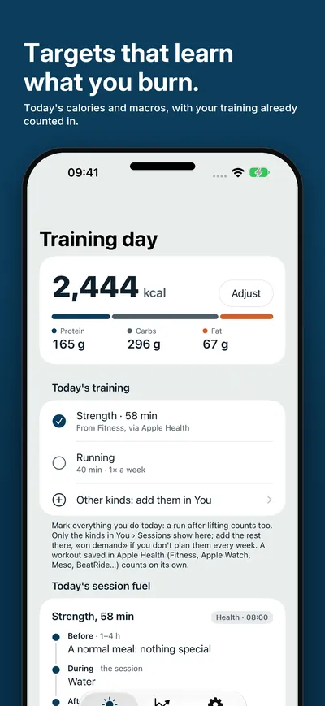
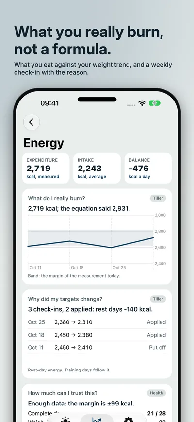
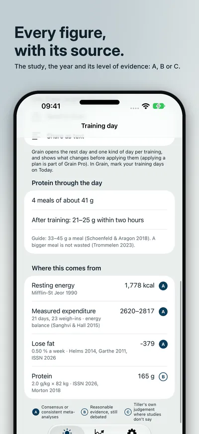
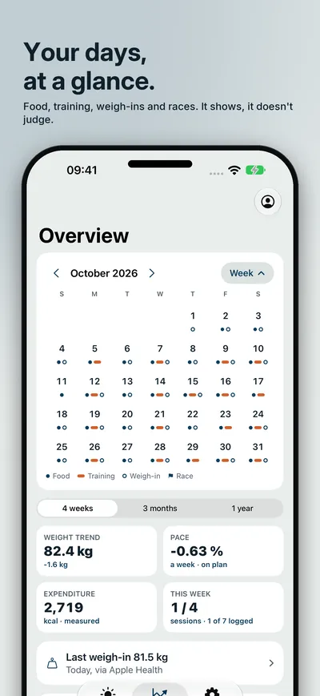
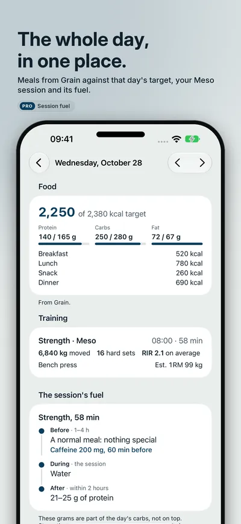
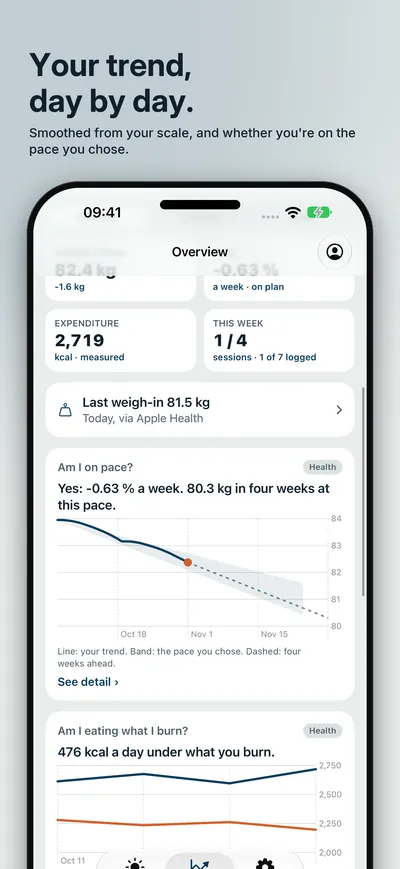
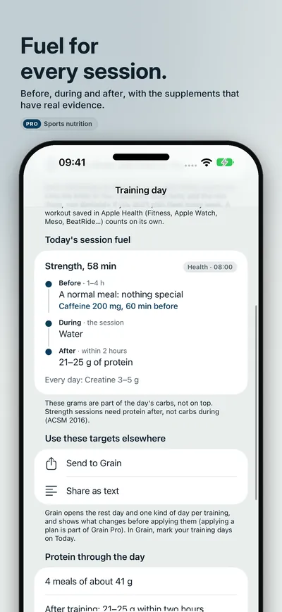
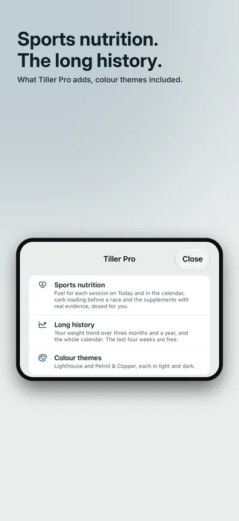

Seize Apps · iOS
Tiller
Tiller works out your calories and macros for rest days and training days, learns what you really burn by comparing what you eat with the trend of your weight, and proposes new targets every week, with the reason. Every figure says where it comes from: the study, the year and how solid the evidence is. It shows, it does not judge: no green, no red.








What it does
One job, done well.
- 01 / LEARN
Targets that learn
Lose fat, recomp, maintain or gain, with strength or endurance. Tiller reads what you eat from Grain or from Apple Health and your weight from your scale, measures what you really burn instead of guessing it with a formula, and proposes your new targets every week. Rest days, training days and carb loading each have their own; say what you train today, even more than one thing, and the day adds it up.
- 02 / EXPLAIN
Every figure, with its source
"Where this comes from" on every target: the study, the year, why it applies to you and its level of evidence, A, B or C. Protein through the day, meal by meal. Have a dietitian? Enter their prescription and Tiller carries it, re-adjusting it with your real expenditure.
- 03 / SEE
Your days, at a glance
A calendar at the top of the Overview with what you ate against that day's target, your training from Meso, BeatRide or Apple Health, your weigh-ins and races, plus your weight trend and whether you are on the pace you chose. Tiller Pro adds sports nutrition (fuel for each session, carb loading before a race and supplements with real evidence, dosed for you), the long history and colour themes: a one-time purchase, with a free 30-day trial.
Privacy
Yours, not ours.
Tiller has no account. What it reads from Apple Health never leaves your iPhone; what you type (your profile, weigh-ins and targets) stays on your device and in your own iCloud account. Grain's and Meso's data are read on the device. Anonymous usage statistics of our own, never a figure about you, which you can turn off in Settings. Tiller does not replace a dietitian or a doctor.
A Seize Apps app.